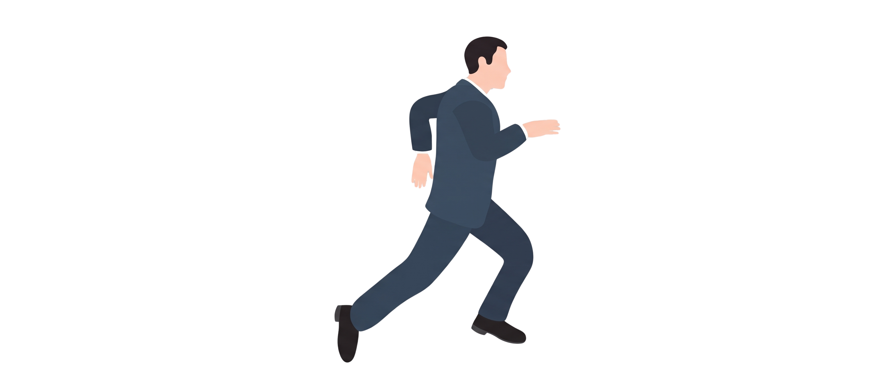

"Hồ sơ đã trình rồi… nhưng không ai biết đang ở bước nào."
Chuẩn hóa luồng duyệt – mua sắm – nhân sự
Quy trình & thẩm quyền trong vài giây
Onboarding: ai làm gì, trình ai duyệt
| STT | Nội dung công việc | CẤP XỬ LÝ THEO PHÁP LUẬT | THEO QUY ĐỊNH NỘI BỘ | |||||
|---|---|---|---|---|---|---|---|---|
| PVEP | PVN | BCT/Bộ ngành | TTgCP | TGĐ PVEP | HĐTV PVEP | HĐTV PVN | ||
| 1.1 | Danh mục lô dầu khí, lô điều chỉnh | Đ.xuất | T.định | P.duyệt | ||||
| 2.1 | Danh mục đề án điều tra cơ bản | Đ.xuất | P.duyệt | P.cấp/P.duyệt | Th.qua | |||
| 3.1 | Kế hoạch lựa chọn nhà thầu | Đ.xuất | P.duyệt | P.cấp/P.duyệt | ||||
| 3.2.1 | Thông báo hồ sơ mời thầu | T.hiện | ||||||
| 5.1 | Chuyển nhượng quyền lợi tham gia HĐ dầu khí | Đ.xuất | P.duyệt | P.cấp/P.duyệt | X.xét | Th.qua | ||
| Việc | Căn cứ pháp lý |
|---|---|
| Chuyển nhượng quyền lợi | |
| Danh mục lô dầu khí | |
| Kế hoạch phát triển mỏ | |
| Lựa chọn nhà thầu |
Chỉ đưa văn bản công khai cho AI. Không đưa văn bản phân cấp nội bộ, hợp đồng, số liệu mỏ lên công cụ công khai.
Output của AI là bản nháp ~70%, không phải kết luận. Thẩm quyền phải đối chiếu lại điều khoản gốc trước khi dùng.
Kiểm soát: nếu file chứa dữ liệu phân cấp nội bộ thì là tài liệu nội bộ — phát qua kênh kiểm soát, không đăng công khai.
RACI hôm nay không chỉ là bảng phân công.
Mà là công cụ quản trị · kiểm soát thẩm quyền · giám sát · QTRR